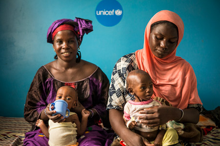

Terapautisk melk
UNICEF har utviklet en ekstra næringsrik melk for å behandle undernærte barn. Dette er for de aller
svakeste barna i den første fasen. Den terapeutiske melken inneholder vegetabilsk fett,
karbohydrater, vitaminer og mineraler.

Kjøp Nå
Tilbake